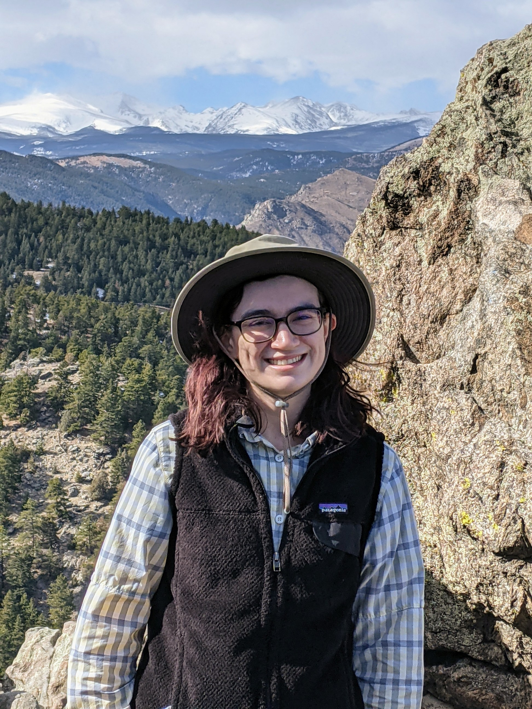

Sarah Leventhal
PhD Candidate, Geological Sciences
University of Colorado, Boulder
sarah.leventhal@colorado.edu

Hi! I am Sarah Leventhal, an invertebrate paleontologist interested in the evolution of colonial animals.
Much of my research focuses on modular colonies - bryozoans specifically.